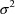
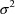
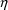
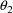
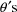
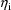
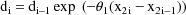
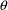

,
,
 , and
, and two independent variables:
, which denotes the amount of the dose, and
, which denotes time. The simple nature of the situation
refers to the statistical model which is defined by
, and
, and two independent variables:
, which denotes the amount of the dose, and
, which denotes time. The simple nature of the situation
refers to the statistical model which is defined byAlthough the main purpose of NONMEM is to handle more complicated statistical models than the simple nonlinear statistical regression model, the example discussed in this chapter will help illustrate and explain many aspects of NONMEM. Also, since some of the features illustrated in this chapter are not part of every nonlinear regression program, the user may be interested in using NONMEM with simple nonlinear regression models. These features include the ones listed as i-ix in section A.3. The features listed as x-xiv (not illustrated in this chapter) could also apply to simple nonlinear regression.
Typical of a simple nonlinear regression situation is the one discussed here where the plasma concentation of the drug theophylline has been observed at various times after an oral dose has been administered to a subject. The regression function is taken to be the "one-compartment model with first-order absorption" (Gibaldi and Perrier, 1982):
where there are three regression
parameters,
,
, and
, and two independent variables:
, which denotes the amount of the dose, and
, which denotes time. The simple nature of the situation
refers to the statistical model which is defined by
where
is the ith value of the dependent variable,
and
are the associated values of the independent variables (
is subscripted here, although its value remains constant),
and the
 are statistically independent random errors with means 0 and
common variance
. This variance is another model parameter which is to be
estimated. Note that the variance of
are statistically independent random errors with means 0 and
common variance
. This variance is another model parameter which is to be
estimated. Note that the variance of
 is also the constant

.
is also the constant

.
To proceed with the data analysis one needs to inform NONMEM about
|
i |
the organization of the data set | |
|
ii |
some underlying model structure: in this case the number of regression parameters and the fact that there is only one random effect | |
|
iii |
the way to compute values of the regression function | |
|
iv |
initial estimates of the model parameters | |
|
v |
the tasks to be performed |
The data set specification records take care of i, the model specfication records take care of ii, the initial estimate records take care of iv, and the task specification records take care of v. A user-supplied FORTRAN subprogram, PRED, takes care of iii. These four sources of input will be discussed in the remaining sections of this chapter. Before turning to this discussion, some remarks about estimation with simple nonlinear regression are in order.
Traditionally, estimates of the regression parameters are obtained by searching for those values , , , of the parameters that minimize the function

where I is the number of
observations. Such a function is called an objective
function. This particular function is called the
least squares (LS) objective function. The estimate
of
 is obtained by dividing the minimum value of the objective
function by I (or sometimes by I minus the number of
regression parameters, i.e. I-3 in this case). For simple
nonlinear regression, NONMEM uses a slightly different
objective function:
is obtained by dividing the minimum value of the objective
function by I (or sometimes by I minus the number of
regression parameters, i.e. I-3 in this case). For simple
nonlinear regression, NONMEM uses a slightly different
objective function:
and takes the values , , , of the four model parameters minimizing this function to be the parameter estimates. However, it may be easily verified that
This objective function is called the extended least squares (ELS) objective function. It is a special case of a more general ELS objective function described in later chapters. This general objective function is used by default with NONMEM because it can be used with statistical models that are more complicated than a simple nonlinear regression model, while, as just noted, a special case of it can also be used to obtain simple least squares estimates. In its general form use of the ELS objective function provides statistically consistent estimates under the assumption that the data arise from the data analytic model (Beal, 1984b). With simple nonlinear regression models, or with different models, different objective functions from this default function may be used to obtain parameter estimates (see NONMEM Users Guide, Part II).
The regression function f is computed for various values of the regression parameters and independent variables. The user-supplied subroutine PRED is expected to return the appropriate value of f for any such set of values. The argument list for PRED is
ICALL, NEWIND, THETA, DATREC, INDXS, F, G, H.
The arguments ICALL and INDXS
are discussed in sections C.4.2 and C.4.1, respectively. The
argument NEWIND is discussed in section C.3.5.2. The
argument H is discussed in chapters E and F. THETA is a
one-dimensional array in which the values of the
 are passed. DATREC is another one-dimensional array in which
a data record is passed, including, in our example, the data
items corresponding to the values
and
, for some i, of the independent variables. PRED is called
many times, and when it is called, it is called in bursts.
During a burst of calls, the values in THETA are held fixed,
and the data records from an individual record are passed
one after the other in the order in which they appear in the
individual record. This is called a burst of the
individual record. In the example ID data items are not
used, and so every data record is an individual record. In
this case every burst of an individual record will consist
of a single call.
are passed. DATREC is another one-dimensional array in which
a data record is passed, including, in our example, the data
items corresponding to the values
and
, for some i, of the independent variables. PRED is called
many times, and when it is called, it is called in bursts.
During a burst of calls, the values in THETA are held fixed,
and the data records from an individual record are passed
one after the other in the order in which they appear in the
individual record. This is called a burst of the
individual record. In the example ID data items are not
used, and so every data record is an individual record. In
this case every burst of an individual record will consist
of a single call.
Using the values in THETA and DATREC, PRED must compute the value of f and return it in the argument F. This is illustrated in Fig. 1, where one possible code for a PRED which implements the example is given. With simple nonlinear regression the value 1.0 must be returned in the first entry of the one-dimensional array G. The reason for this is made clearer in chapter D.
The PRED subroutine may be as complicated as is needed. In particular, it may call other user-supplied subroutines to accomplish various tasks. The following dimension statement should always be included:
DIMENSION THETA(*),DATREC(*),INDXS(*),G(*),H(*)
as well as the statement:
DOUBLE PRECISION THETA,F,G,H
when Double Precision NONMEM is being used. When double precision is used, the floating-point computations in PRED based on the values in THETA should be done in double precision. Failure to do so can result in failure to estimate the parameters altogether.
The first control record in the control stream must be the FILE record, a record that applies to all the problems occuring in the NONMEM run. This record is not to be confused with a file record appearing in the file stream. However, this record is very much concerned with file records. Character format is used. The character field contains the name (left-adjusted) of a file containing the file stream. If no file records are to be used (meaning that no optional NONMEM files are to be used), then the word NULL can be placed in the field, and it is then understood that there is no file stream. See, for example, the control stream shown in Fig. 2.
A problem specification is a sequence of control records providing the control information for a given problem. The control records are chosen from the list given in Table B.2.i (but cannot include the FILE record), and the order in which they appear in the problem specification must follow the order in which they appear in the table. A NONMEM run can consist of a single problem. A control stream is constructed which consists of the FILE record followed by a problem specification. This is illustrated by the control stream in Fig. 2. Multiple problems can occur in a single NONMEM run simply by constructing a control stream consisting of the FILE record followed by the concatenation of a number of problem specifications.
The first control record of a problem specification must always be the PROBLEM record. Character format is used. A heading for the computer printout is placed in the field. See Fig. 2. The next four control records of the problem specification in that figure are data set specification records, the DATA, ITEM, LABEL, and FORMAT records. These are discussed in section C.3.2. The next record is a model specification record, the initial STRUCTURE record. This is discussed in section C.3.3. The next five records are initial estimate records, the THETA CONSTRAINT, THETA, LOWER, UPPER, and DIAGONAL records. These are discussed in section C.3.4. The last five records are task specification records, the ESTIMATION, COVARIANCE, TABLE, and SCATTERPLOT records. These are discussed in section C.3.5. This entire discussion is summarized in the Appendix.
The entire computer printout which results from using the PRED routine and control stream given in Figs. 1 and 2, respectively, is given in Figs. 3-18. Explanation about this printout is given below along with detailed explanation about the control records. The first page of printout is a rather self-explanatory page summarizing the information given in the problem specification. It is called the problem summary.
Control parameters giving a global characterization of the data set are given in the DATA record. This record must appear in a problem specification. Integer format is used.
The data set may be embedded in the control stream as in Fig. 2. If the number of data records is small, this is often the most convenient procedure. Then a blank or 0 is placed in field 1, and a blank or 0 is placed in field 2.
Alternatively, the data set may be contained in a separate (sequential) file, in which case a 1 is placed in field 1. With the first problem the file is read once only, until all data records in the data set are read. NONMEM knows when to stop reading data records because the number of data records is placed in field 3. If there is a subsequent problem which uses the same data set, the file will need to be rewound before it can be read again. This is accomplished by placing a 1 in field 2. If a subsequent problem in the same run uses a second data set, one contained in the same file as is the first data set and placed immediately after it, then with this subsequent problem the file should not be rewound. The reading of the file must continue from where it ended with the first problem. This is accomplished by placing a 0 or blank in field 2.
As stated above, the number of data records in the data set is placed in field 3. With large data sets, it may not be convenient to have to know this number, and there is a way in which field 3 can be ignored; see NONMEM Users Guide, Part II.
The number of data items per data record is placed in field 4. This number must be between 1 and 20. This does not represent a significant limitation; data records designated as missing DV data items can effectively serve as continuations of data records.
The DATA record in Fig. 2 illustrates the above remarks.
The main function of the ITEM record is to specify where various data items of interest are found in the data records. This record must appear in a problem specification. Integer format is used.
The index, i.e. the position in the data record, of the ID data item is given in field 1, the index of the DV data item is given in field 2, the index of the MDV data item is given in field 3, and the index of the L2 data item is given in Field 7. Since a DV data item must always be present in the data record, the integer in field 2 must always be at least 1. However, if the records do not include ID data items, a blank or 0 should be placed in field 1, and similarly with respect to fields 3 and 7. The ITEM record in Fig. 2 illustrates these remarks. Since ID, MDV, and L2 data items are not included in the data records, 0’s are placed in fields 1, 3, and 7 (a blank acts like a 0).
A blank or 0 should be placed in field 4 unless the INDXS feature is used; this feature is discussed below in section C.4.1.
If the user wants to specify alphanumeric labels to be used in the output for the different types of data items, then a 1 should be placed in field 5. If the user wants NONMEM to specify labels, then a blank or 0 should be placed in field 5. In this case the labels will be VR 1, VR 2, etc. for the first, second, etc. type data items in the data record. The problem specification of Fig. 2 indicates that labels are to be user-specified.
Labels to be used in the tables and scatterplots for the different types of data items are given in the LABEL record. Each label consists of 4 alphanumeric characters, including blanks. The LABEL record is optional. When it appears, labels for all the different types of data items must be supplied. When it appears, a 1 must also be placed in field 5 of the ITEM record (see above).
The format of the LABEL record is special; it is unlike any of the formats of the other control records. There are as many fields in the LABEL control record as there are data items in a data record. (However, see NONMEM Users Guide, Part II for a discussion of specifying labels for the NONMEM generated data items.) Each field has four positions, and the label for the ith data item is placed in the ith field. The fields are separated by 4 blanks. See Fig. 2. At most 9 labels can be placed in the fields of a LABEL record comprised of one FORTRAN record, and if there are more than 9 data items per data record, the LABEL record can be continued with other FORTRAN records (9 labels per FORTRAN record).
The FORTRAN format specification used to read the data items (see section B.1) is supplied in the FORMAT control record. This record must appear in a problem specification (except see the discussion in NONMEM Users Guide, Part II, regarding the first field of the DATA record). The format of the FORMAT record is special; it is unlike any of the formats of the other control records. The specification, including both left and right enclosing parentheses, is placed anywhere in the FORTRAN record immediately following the FORTRAN record containing the preface. See, for example, Fig. 2. This allows the specification to be as long as 80 characters (including left and right enclosing parentheses).
In Fig. 2 the data records follow the FORMAT record, and thus the data set is embedded in the control stream. Embedding the data set in the control stream is always accomplished in this way. In Fig. 2 each data record contains 3 data items. The first data item is the dose amount, the second data item is the time, and the third data item is the DV data item.
There is just one model specification record needed for a simple nonlinear regression problem, the initial STRUCTURE record. The dimension of the parameter space is obtained from the information given in this control record. Sometimes additional STRUCTURE records are needed in a problem specification. The initial STRUCTURE record is required unless a Model Specification File is input (see section C.4.4). Integer format is used.
There are 8 fields on this
record, but only 3 of these are of concern with simple
nonlinear regression. The length of THETA is placed in field
1. In the example this number is 3. The number of random
interindividual effects is placed in field 2. In the example
this number is 1. The only random effect is

, and as explained in section A.5, it is a random
interindividual effect. A 1 is placed in field 6. This has
the effect of informing NONMEM that the variance-covariance
matrix
of all random interindividual effects is diagonal. With
simple nonlinear regression, where there is only one such
effect,
 is a simple scalar quantity (
), and this is the simplest example of a diagonal
matrix.
is a simple scalar quantity (
), and this is the simplest example of a diagonal
matrix.
Initial estimates of the model parameters are used in several ways. If a minimization search for parameter estimates is carried out, the search will begin at the initial estimates. When a search is continued from a previous problem, and a Model Specification File is input for this purpose, then the search begins from where it left off in the previous problem. In this case initial estimate records are not required. If a search is not undertaken, tables and scatterplots can still be generated, and the NONMEM generated data items (e.g. prediction, residual, and weighted residual data items) will be computed using the initial estimates (unless, again, a Model Specifcation File is used). An initial estimate should represent the best guess of the population value of the parameter. Some appropriate scale for the parameter should be implied by the initial estimate. The value 0 (a number which has no scale) is never allowed unless the parameter is fixed to this value. Parameters can be fixed in value; this will be described below. There can sometimes be problems in guessing at population values. NONMEM provides some help in this regard. This is illustrated in section C.3.4.6 below and in section C.4.5.
Control parameters concerned
with constraining the elements of THETA are given in the
THETA CONSTRAINT record. Constraints on THETA elements are
necessary when NONMEM must obtain initial estimates of some
of these elements; see section C.4.5. They also may be used
for obtaining final estimates of these elements. In this
latter context, the minimization search is undertaken in a
constrained parameter space. Each THETA element may be
individually constrained (or not) to lie in an interval of
the form (a,b), where a may be
 and/or b may be
and/or b may be
 . Or perhaps a=b, in which case the element is fixed to the
value a. The value a is called the lower bound, and
the value b is called the upper bound.
. Or perhaps a=b, in which case the element is fixed to the
value a. The value a is called the lower bound, and
the value b is called the upper bound.
Integer format is used with the THETA CONSTRAINT record. This record is required unless a Model Specifcation File is input. (However, there is the following exception to this rule which should only be of interest to Version II users. The THETA CONSTRAINT record is new to Version III. It is used in part to replace the use of fields 4 and 5 of the initial STRUCTURE record. Field 1 on the THETA CONSTRAINT record is equivalent to field 4 of the INITIAL STRUCTURE record. Field 5 of the INITIAL STRUCTURE record is unnecessary with Version III. Version III ignores fields 4 and 5 unless the THETA CONSTRAINT record is missing from the problem specification. Fields 4 and 5 of the initial STRUCTURE record will be deactivated with Version IV.)
If none of the THETA elements are to be constrained, a 0 is placed in field 1. In Fig. 2 a 1 appears in field 1, indicating that some of the THETA elements are to be constrained. There is one other field in this record; it is described in section C.4.5.
Initial estimates of the elements of THETA should be placed in the fields of the THETA record. The initial estimate of the ith element is placed in the ith field. Fixed point format is used. This record is required unless a Model Specification File is input.
In the THETA record of Fig. 2 the three initial estimates are 1.7, .102, and 29. These estimates were obtained using the"method of residuals" (sometimes called the "peeling" or "feathering" method) for fitting exponentials, described in Gibaldi and Perrier, 1982, Appendix C.
If a finite lower bound is to be given for some THETA element, then lower bounds must be given for all THETA elements in the LOWER BOUND record. (Also, in this case upper bounds must be given for all THETA elements in the UPPER BOUND record.) However, any THETA element can be effectively unbounded from below by using the lower bound . These lower bounds should be placed in the fields of the LOWER BOUND record. The lower bound for the ith element is placed in the ith field. A lower bound is given by the value -1000000. Fixed point format is used. This record is required when and only when there is a THETA CONSTRAINT record with a 1 in field 1. Lower bounds are shown in Fig. 2.
If a finite upper bound is to be
given for some THETA element, then upper bounds must be
given for all THETA elements in the UPPER BOUND record.
(Also, in this case lower bounds must be given for all THETA
elements in the LOWER BOUND record.) However, any THETA
element can be effectively unbounded from above by using the
upper bound
. These upper bounds should be placed in the fields of the
UPPER BOUND record. The upper bound for the ith element is
placed in the ith field. An upper bound
 is given by the value 1000000. Fixed point format is used.
This record is required when and only when there is a THETA
CONSTRAINT record with a 1 in field 1. Upper bounds are
shown in Fig. 2.
is given by the value 1000000. Fixed point format is used.
This record is required when and only when there is a THETA
CONSTRAINT record with a 1 in field 1. Upper bounds are
shown in Fig. 2.
The initial estimates of the
elements of the variance-covariance matrix
 of the random interindividual random effects are given in
the DIAGONAL record for
. Recall that with simple nonlinear regression
of the random interindividual random effects are given in
the DIAGONAL record for
. Recall that with simple nonlinear regression
 is specified to be diagonal (see discussion above about the
initial STRUCTURE record). If
is specified to be diagonal (see discussion above about the
initial STRUCTURE record). If
 is not diagonal, the initial estimates would be given in
BLOCK SET records; see section D.5.3. The initial estimate
of the ith diagonal element is placed in the ith field of
the DIAGONAL record. Fixed point format is used. This record
is required whenever there are random interindividual
effects, unless a Model Specification File is input.
is not diagonal, the initial estimates would be given in
BLOCK SET records; see section D.5.3. The initial estimate
of the ith diagonal element is placed in the ith field of
the DIAGONAL record. Fixed point format is used. This record
is required whenever there are random interindividual
effects, unless a Model Specification File is input.
With simple nonlinear regression , a simple scalar quantity. Most nonlinear regression programs do not require the user to supply an initial estimate of ; NONMEM is no exception. Whenever the fields of the DIAGONAL record are left blank and a 2 is placed in position 8 of this record, NONMEM will try to obtain an initial estimate of using the data. See the DIAGONAL record in Fig. 2.
When initial estimates are
user-supplied, then there must be initial estimates for all
diagonal elements, i.e. no field can be left blank. An
initial estimate of a population interindividual variance
component should represent the best guess of this component,
and it is best to overestimate the component, rather than
underestimate it. The matrix
 can be fixed to its estimate. This is accomplished by
placing a 1 in position 8 of the DIAGONAL record.
can be fixed to its estimate. This is accomplished by
placing a 1 in position 8 of the DIAGONAL record.
Whenever NONMEM is asked to obtain an initial estimate, the Initial Estimate Step is implemented. The printout from this step consists of a display of all the elements of the initial parameter estimate. For the example, see Fig. 4. There the initial estimates of the are given under the heading THETA - VECTOR OF FIXED EFFECTS and are the ones given in the THETA record, and the initial estimate of is given under the heading OMEGA - COV MATRIX FOR RANDOM EFFECTS and is 1.17, a number computed by NONMEM.
The Estimation Step is controlled by information given in the ESTIMATION record. When this records is included in a problem specification, the Estimation Step can be executed. When it is absent from the problem specification, the Estimation Step is not implemented. Integer format is used.
A blank or 0 is normally placed in field 1. A 1 can be placed in this field, and then even though the ESTIMATION record appears, the Estimation Step is not implemented, and the remaining fields of the ESTIMATION record may be ignored.
During a minimization search, the objective function must be computed at a number of points in the parameter space, and the number of such evaluations is a measure of the work done during the Estimation Step. The user establishes an upper limit to this number and places this limit in field 2. The search will terminate unsuccessfully if this particular number (or a slightly greater number) of objective function evaluations is attained. In this case a final parameter estimate results which is usually better than the initial estimate, but it is not optimal. The search may be conveniently and smoothly continued in a subsequent NONMEM run, and without starting the search from the beginning and specifying a larger upper limit to the number of function evaluations. This is described in section C.4.4. It requires writing a Model Specification File. In Fig. 2 the number of maximum function evaluations is given as 240.
The minimization search is
divided into stages called iterations. At the end of
each iteration a parameter estimate results. It is called
the iteration estimate. The value of the objective
function at the estimate at iteration m is larger than the
value of the objective function at the estimate at iteration
m+1. The iteration estimate at the 0th iteration is taken to
be the initial estimate. The search terminates only when the
the two estimates at two successive iterations agree in
at least the first r significant digits (including
leading zeros after the decimal point) with respect to each
of the parameter components. Recall that in our simple
nonlinear regression example there are four parameter
components,
,

,
, and
 . The number r is specified by the user and is placed in
field 3. In this regard the user should be aware that the
minimization search is actually carried out in a
reparametrized space established by NONMEM (see below), and,
to be precise, the criteria for a successful termination
apply to estimates of parameters in this space. However,
usually a reasonable approach to specifying r when, as
suggested above, the initial estimates are the user’s
best guess of the population values of the parameters, is as
follows. For each parameter component, let q be the number
of significant digits ( excluding leading zeros after
the decimal point) in its initial estimate that the user
feels with a fair degree of certainty are accurate. The
number q could be zero, of course. Let m be the minimum
value of q over all parameter components, and let r be m+2,
or m+3. With Double Precision NONMEM, r could be a little
larger, m+4 or m+5. If after examining the output, the user
feels that the search should be continued using a greater
value of r, this may be done conveniently in a subsequent
run (see section C.4.4). In Fig. 2 r is set to 4.
. The number r is specified by the user and is placed in
field 3. In this regard the user should be aware that the
minimization search is actually carried out in a
reparametrized space established by NONMEM (see below), and,
to be precise, the criteria for a successful termination
apply to estimates of parameters in this space. However,
usually a reasonable approach to specifying r when, as
suggested above, the initial estimates are the user’s
best guess of the population values of the parameters, is as
follows. For each parameter component, let q be the number
of significant digits ( excluding leading zeros after
the decimal point) in its initial estimate that the user
feels with a fair degree of certainty are accurate. The
number q could be zero, of course. Let m be the minimum
value of q over all parameter components, and let r be m+2,
or m+3. With Double Precision NONMEM, r could be a little
larger, m+4 or m+5. If after examining the output, the user
feels that the search should be continued using a greater
value of r, this may be done conveniently in a subsequent
run (see section C.4.4). In Fig. 2 r is set to 4.
The progress of the search may be monitored, and a summary of the progress after every n iterations, starting with the first iteration, will be printed. The number n is placed in field 4. Summaries after the 0th iteration and last iterations are also printed. If no summaries are wanted, a blank or 0 should be placed in field 4. Examples of these summaries are given in Fig. 5, where summaries after every 2 iterations are printed; this output results from the problem specification of Fig. 2.
A summary at the end of an iteration includes the iteration estimate. The estimate is given in terms of a reparametrization established by NONMEM. The new parameters are called the scaled transformed parameters (STP). In a simple nonlinear regression, each of the STP is obtained by transforming and then scaling one of the original parameters. The first several of the STP are obtained in order from the first several  , and the last of the STP is obtained from . Each STP is scaled so that the absolute value of its initial estimate is 0.1 (see the summary of the 0th iteration in Fig. 5).
A summary also includes the value of the objective function evaluated at the iteration estimate. Notice from Fig. 5 that these values decrease from iteration to iteration. A summary also includes the gradient vector of the objective function with respect to the STP and evaluated at the iteration estimate. It can be seen in Fig. 5 that the gradient vector at the last iteration is a several orders of magnitude smaller than that at the 0th iteration. This reflects the fact that the final estimate effectively minimizes the objective function. Lastly, a summary also includes the number of function evaluations computed during the iteration.
Three lines of output are always generated by the Estimation Step in addition to iteration summaries. The first line gives the reason the minimization terminated. In Fig. 5 the reason given is that the criteria for a successful termination were satisfied. Another reason could have been that the maximum number of function evaluations was attained. A third reason could have been that the search algorithm could not conclude that a minimum had been attained due to round-off problems. If the search terminates for either the second or third reasons, the termination is referred to as being unsuccessful. The second line gives the total number of times the objective function was evaluated during the search. The third line gives an estimate of the number of significant digits in the final estimate. This number is a decimal fraction. Let be the integer part of this number, and let be the greatest integer that could have been placed in field 3 with the effect that a successful termination would have resulted (there being no upper limit to the number of function evaluations). When the maximum number of function evaluations is not attained, then . When the maximum number of function evaluations is attained, . When the termination is successful, is, of course, no less than the integer in field 3. The number of significant digits in the final estimate for the example (see Fig. 5) is 8.5.
When the search terminates unsuccessfully due to problems with rounding errors, this means that changes in the objective surface around the minimum are too small to be distiguished from machine round-off effects. This determination depends on computed information about the surface curvature. There are several possible user-responses. If the number of significant digits in the final estimate is satisfactory, and if the gradients at the minimum are several orders of magnitude smaller than the gradients at the initial estimate, then cautiously ignore the message. If single-precision NONMEM was used, try using double-precision NONMEM. If the initial estimates are within a few percent of previously obtained final estimates which result from a successful termination, then re-run, using initial estimates that are perturbed from these final estimates. One common reason for round-off problems is that the model is over-parameterized. If the suggested user-responses given above neither apply nor help, then the user should consider a model with fewer parameters.
The iteration summaries can be useful in a few ways. First, one can use them to check that the search indeed converged to a local extremum of the objective function surface, by checking that the gradients are relatively small. It is possible for the message that the search terminated successfully to be issued while the search, in fact, did not converge to a local extremum, let alone a local minimum. Second, one can use them to check that some mistake has not been made or that the model is not extremely overparameterized, by checking that the parameter estimate changes during the search. This, of course can also be done by comparing the final parameter estimate to the initial parameter estimate, but this is easy to check at a glance from the iteration summaries. Sometimes a coding error in a user-supplied routine results in a parameter not having any influence on the fit, in which case its estimate will not change during the search. If the model is extremely overparameterized, this too may result in no change in some parameter estimate. Sometimes the search will extend into a region of the parameter space where numerical difficulties will occur and error messages reflecting these difficulties will be output. If these messages are intermingled in the earlier iteration summaries, but do not appear in the later summaries, and if the final parameter estimate is reasonable, one may conclude that the search returned to a more reasonable and less problematic area of the parameter space before terminating.
Lastly, there can be indication with the 0th and early iteration summaries that some mistake has been made. If at the 0th iteration, the gradient vector is zero, this could indicate that numerical constants have not been set appropriately in NONMEM itself at installation time (see Users System Guide) or that double precision NONMEM is being used while double precision is not being handled correctly in a user-supplied subroutine. In the latter case, often a user forgets to declare some variable (depending on a ) as a double precision variable. When the value of the objective function at the 0th iteration estimate is an extremely large (usually the largest floating point number representable on the machine), and the gradient vector is also zero, this usually indicates that there has been a mistake in either user-supplied code, the data, or the initial estimates. In particular, the user should check these three things for mistakes that could affect partial derivatives since the symptomology in question results when the variance-covariance matrix of the data from some individual is initially estimated to be singular.
Whether or not the Estimation Step is implemented, the final parameter estimate is printed. In the latter case, the final estimate is taken to be the initial estimate. Fig. 7 shows the final estimate for the example. The number .899, appearing under the heading OMEGA - COV MATRIX FOR RANDOM EFFECTS - ETAS, is the final estimate of . The minimum value M of the objective function is also printed. Fig. 6 shows this minimum value for the example. With simple nonlinear regression, and using the ELS objective function, M coincides (except for a parameter-independent additive constant) with -2L, where L is the logarithm of the likelihood of the data evaluated at the maximum likelihood parameter estimate, under the assumption that the  are normally distributed. The minimum value may be used across runs to develop likelihood ratio type tests of hypothesis about the parameters (Gallant, 1975).
The Covariance Step is controlled by information given in the COVARIANCE record. When this record is included in a problem specification, the Covariance Step can be implemented. When it is absent from the problem specification, the Covariance Step is not implemented. This may be done when, for example, the user is focusing on the Estimation Step only. The Covariance Step may be implemented in a subsequent run without repeating the Estimation Step (see section C.4.4). It is an error to include the COVARIANCE record when the Estimation Step is not implemented and a Model Specification File is not input. This is because the validity of the covariance matrix depends heavily on the condition that the parameter estimate minimize the objective function, and NONMEM wants to be assured that such an estimate is available. Integer format is used.
A blank or 0 is normally placed in field 1. This means that the Covariance Step is conditionally implemented, i.e. it is implemented only if the Estimation Step terminates successfully. However, this condition can be over-ridden by placing a 1 in field 1. Then regardless whether the Estimation Step terminates successfully, the Covariance Step is also implemented. Also, a 2 can be placed in field 1, and then even though the COVARIANCE record appears, the Covariance Step is not implemented, and the remaining fields of the COVARIANCE record may be ignored.
There are other fields in the COVARIANCE record, most of which are described in NONMEM Users Guide, Part II. Field 5 is discussed below; this discussion is relevant only when the computation implemented in PRED is recursive.
Implementation of the Covariance
Step results in a printout of the estimates of the standard
errors of the parameter estimates, the covariance matrix,
the inverse of the covariance matrix, and the correlation
form of the covariance matrix. The reader is reminded that
the standard error estimates are the square roots of the
diagonal elements of the covariance matrix. Fig. 8 shows the
standard error estimates for the example. The number .545,
appearing under the heading OMEGA - COV MATRIX FOR RANDOM
EFFECTS - ETAS, is the standard error estimate for
 . Fig. 9 shows the full covariance matrix. The label OM11
refers to
. The covariance of
with any one of the
is not zero, reflecting the fact that for the purpose of
computing the covariance matrix, the random errors in the
models (the
. Fig. 9 shows the full covariance matrix. The label OM11
refers to
. The covariance of
with any one of the
is not zero, reflecting the fact that for the purpose of
computing the covariance matrix, the random errors in the
models (the
 ) are not assumed to be normally distributed.
) are not assumed to be normally distributed.
The user should be familiar with
the covariance matrix associated with use of the least
squares objective function. The computation of this matrix
does not rest on a normality assumption about the
 (Jennrich, 1969), although the computation can also be
justified under the assumption that the
(Jennrich, 1969), although the computation can also be
justified under the assumption that the
 are normal, using maximum likelihood theory (Hoadley, 1971).
Similarly, the covariance matrix associated with use of the
extended least squares objective function does not rest on a
normality assumption (Beal, 1984b). This covariance matrix
includes the variance of
and the covariances of
with the
. Under the normality assumption, a similar covariance
matrix can be computed, one, however, where these
covariances are always zero.
are normal, using maximum likelihood theory (Hoadley, 1971).
Similarly, the covariance matrix associated with use of the
extended least squares objective function does not rest on a
normality assumption (Beal, 1984b). This covariance matrix
includes the variance of
and the covariances of
with the
. Under the normality assumption, a similar covariance
matrix can be computed, one, however, where these
covariances are always zero.
Fig. 10 shows the correlation matrix, and Fig. 11 shows the inverse of the covariance matrix.
Field 5 of the COVARIANCE record is concerned with PRED routines which are recursive. Another PRED which implements the very same example and produces virtually the same output is given in Fig. 19. It is an example of a recursive PRED, i.e. the value of the argument F returned with a given data record depends on computations taking place in PRED with previous data records. The computation is based on the superimposition principle with linear kinetic systems which in this case allows the regression function for the ith observation to be written recursively as
where

where the initial conditions are
and where the time points are ordered from low to high values, and the dose amounts are constant. The function B is the Bateman function. PRED calls the subroutine BATE which computes this function. The code for BATE is given in Fig. 20.
For the purpose of computing the covariance matrix, a burst of an individual record (see section C.2) can occur immediately after another burst of the same individual record. When both (i) a recursive PRED is used, and (ii) the recursion extends across individual records, this pattern of bursts will cause a problem. When conditions i and ii hold, then for PRED to work correctly, a burst of an individual record must be immediately preceeded by bursts of the preceeding individual records, and these bursts must occur in the order in which the individual records appear in the data set. By placing a 1 in field 5 of the COVARIANCE record, NONMEM will only use this more appropriate pattern of bursting. (When either i or ii does not hold, it is far more efficient, but not necessary, to place a blank or 0 in field 5). So the rule is: whenever a recursive PRED is used, and when the recursion extends across individual records, a 1 should be placed in field 5, indicating that the computation of the covariance matrix should be done in a special way. The SPECIAL COMPUTATION referred to in the middle of Fig. 3 is this computation. In Fig. 3 it is stated that the special computation is not performed. This is because a blank is placed in field 5 of the COVARIANCE record of Fig. 2. Recall that in the example each data record is an individual record. Therefore, if the recursive PRED were used, a 1 should be placed in field 5, and then the problem summary will state that the special computation is performed.
There is another aspect of the PRED in Fig. 19 which should be noted. In order to initialize the recursion the routine must be made aware of which data record being passed is the first data record of the data set The argument NEWIND has the value 0 only when the data record being passed is this first data record. The other values it can have are 1 and 2. When the record is the first record of an individual record, the value of NEWIND is 1 (except with the first individual record, where this value is 0). When the record is the second or subsequent record of an individual record, the value of NEWIND is 2.
The Table Step is controlled by information given in the TABLE records. When these records are included in the problem specification, the Table Step can be implemented. The records consist of an initial TABLE record followed by one or more individual TABLE records. When they are absent from the problem specification, the Table Step is not implemented. Integer format is used.
A blank or 0 is normally placed in field 1 of the initial TABLE record. This means that the Table Step is conditionally implemented, i.e. it is implemented only if the Estimation Step terminates successfully. However, this condition can be over-ridden by placing a 1 in field 1. Then regardless whether the Estimation Step terminates successfully, the Table Step is also implemented. Also, a 2 can be placed in field 1, and then even though the initial TABLE record appears, the Table Step is not implemented, and the remaining fields of this record may be ignored. Also, in this case no individual TABLE records should appear.
The number of tables to be generated is placed in field 2 of the initial TABLE record. Each table is defined by an individual TABLE record, and the tables will appear in the printout in the same order as that in which their defining individual TABLE records appear.
The tables can be printed, or stored in a Table File, or both. If they are only to be printed, a blank or 0 is placed in field 3 of the initial TABLE record. If they are only to be stored in a Table File, a 1 is placed in field 3, and if they are both to be printed and stored, a 2 is placed in field 3. When they are stored, they are stored one after the other in the Table File, which is a sequential file. The records of this file are exactly the records that appear in the output file when the tables are printed (except that the FORTRAN carriage control characters are not included).
A table is a tabulation of the data items of selected type. The rows of the table correspond to data records, and the columns of the table correspond to the selected data item types. The number of data item types selected to appear in a table is placed in field 1 of the defining TABLE record. This number must be between 0 and 8. The total number of columns of the table actually equals this number plus 4, because with each table an additional 4 columns are appended by NONMEM. These 4 columns correspond to the DV data item type and the 3 NONMEM generated data item types (see section A.4). Consequently, the user need not select the DV data item type to appear in a table. When the NONMEM generated data items types are the prediction, residual, and weighted residual, then 0 is tabulated for residual and weighted residual data items with data records designated as missing.
In the example corresponding to Fig. 2 only one table is to be generated; it is to be printed only. There is only one data item type selected for tabulation, the time data item type. Fig. 13 shows this table. Note that since the default objective function is used, the three NONMEM generated data items that appear in the table are the prediction, residual, and weighted residual data items. (In this example, where the statistical error model is homoscedastic, the weighted residual data item is the residual data item divided by the final estimate of , the positive square root of the final estimate of .) These are labeled PRED, RES, and WRES. These labels can be changed, as can the computation of the NONMEM generated data items themselves (see NONMEM Users Guide, Part II).
After the first field of an individual TABLE record, there follow two fields for each selected data item type. The index of the data items of given type is placed in the first of these two fields, and a sort code is placed in the second field. Use of these sort codes to sort the rows of the table on the data items of selected types is described in section D.5.4. Blanks or 0’s should be placed in sort fields unless a sort is desired. In this case the column order of the selected data item types corresponds to the order in which the indices of the data items are placed in the TABLE record.
Example C.3.5.3.i:
|
TABL 3 3 2 7 |
|||
|
column no.: 1 1 2 3 |
|||
|
2 6 4 2 |
In this example three types of data items are selected for tabulation. The first column of the table consists of the data items whose index is 3, the second column consists of the data items whose index is 2, and the third column consists of the data items whose index is 7.
There is a limitation of 900 rows per table. If the number of data records, n, exceeds this limit, any one table will not use all the data records. However, all data records are used in the following way. Each individual TABLE record actually defines a number of tables. A first table is generated which uses data records 1 through . If , then a second table is generated which uses data records 901 through . And so on.
The Scatterplot Step is controlled by information given in the SCATTERPLOT records. When these records are included in the problem specification, the Scatterplot Step can be implemented. The records consist of an initial SCATTERPLOT record followed by one or more individual SCATTERPLOT records. When they are absent from the problem specification, the Scatterplot Step is not implemented. Integer format is used.
A blank or 0 is normally placed in field 1 of the initial SCATTERPLOT record. This means that the Scatterplot Step is conditionally implemented, i.e. it is implemented only if the Estimation Step terminates successfully. However, this condition can be over-ridden by placing a 1 in field 1. Then regardless whether the Estimation Step terminates successfully, the Scatterplot Step is also implemented. Also, a 2 can be placed in field 1, and then even though the initial SCATTERPLOT record appears, the SCATTERPLOT Step is not implemented, and the remaining fields of this record may be ignored. Also, in this case no individual SCATTERPLOT records should appear.
Families of scatterplots are generated. The number of families to be generated is placed in field 2 of the initial SCATTERPLOT record. Each family is defined by an individual SCATTERPLOT record, and the families will appear in the printout in the same order as that in which their defining individual SCATTERPLOT records appear.
The simplest kind of a family consists of a single scatterplot of two types of data items, one for use along the abscissa axis and one for use along the ordinate axis. Examples of these families are shown in Figs. 15-18. These families are defined by the individual SCATTERPLOT records of Fig. 2. The first family consists of the plot of the DV data items vs the time data items. The second family consists of the plot of the prediction data items vs the time data items. The third family consists of the scatterplot of the residual data items vs the time data items. Whenever residuals or weighted residuals are plotted, the "zero line" is also shown. The fourth family consists of the scatterplot of the prediction data items vs the DV data items. Note that in this scatterplot the line with slope equal to 1 is shown. This line is called the unit slope line, and it can be optionally included in any scatterplot. Also, notice that the axes on which the predictions and residual data items are plotted are labeled PRED and RES, respectively. The labels used in the scatterplots are the same ones used in the tables (see section C.3.5.5). More complicated families than those illustrated in Figs. 15-18 are described in section D.5.5.
In each individual SCATTERPLOT record the index of the data items to be plotted on the abscissa axis is placed in field 1, and the index of the data items to be plotted on the ordinate axis is placed in field 2. For the purpose of defining scatterplots, the indices of the NONMEM generated data items are n+1, n+2, and n+3, where n is the number of data items per data record as specified in the DATA record. If the unit slope line is wanted with the scatterplots of a particular family, then a 1 is placed in field 6; otherwise a blank or 0 is placed in the field.
In the PRED in Fig. 1 the positions of the dose and time data items in the data records are assumed to be 1 and 2, respectively. It would be convenient to have a code which is independent of an assumption about the positions of data items in the data records. Such a code is given in Fig. 21. It will work with the data set embedded in the control stream of Fig. 22, which is just like the data set embedded in the control stream shown in Fig. 2. It will also work with the data set emdedded in the control stream shown in Fig. 23 which is just like that embedded in the control stream of Fig. 2 except that the positions of the dose and time data items are reversed. The code employs an indirect addressing feature. Suppose, as in the example, two data items are needed in the computation, and in the code they are numbered 1 and 2 (1 - dose; 2 - time). The position of the Ith such data item in the data record is given by INDXS(I), where INDXS is a one-dimensional array appearing in the argument list to PRED. For example, for PRED to work correctly with the data set shown in Fig. 23, INDXS(2) must equal 1.
The user sets the appropriate values in INDXS by placing the Ith value in the Ith field of the INDEX record. Integer format is used for the INDEX record. This record is optional, but if the indirect addressing feature is used in PRED, then it should appear in the problem specification. It can actually be used for the more general purpose of communicating integer-valued numbers to PRED. When it used, it is placed after the ITEM record in the problem specification. In this case the number of indices occuring in the INDEX record is placed in field 4 of the ITEM record. These remarks are illustrated in both Figs. 22 and 23.
Since in the example dose is a constant, the dose need not be given on any data record. Rather, the dose could be obtained by PRED itself during an initial stage, and thereafter be available in PRED’s local storage. Indeed, there exist PRED initializations, special calls to PRED during which PRED computations can be initialized; At a PRED initialization the routine is not expected to return values in F and G. PRED must be able to recognize these special calls. The first argument to PRED is ICALL. At a PRED initialization ICALL has the value 0 or 1. When PRED must return values in F and G, ICALL has the value 2. At a PRED initialization the values in THETA are the initial estimates (or if an initial estimate of some  is not given, then the midpoint between the lower and upper bounds is used), and the data record passed in DATREC is the first data record. So even though the call is a PRED initialization and PRED is not checking ICALL, usually no difficulty is encountered when PRED proceeds to compute F (see Fig. 1).
A PRED that checks ICALL is shown in Fig. 24. At ICALL=1, the dose is read by PRED on FORTRAN unit 5. Unit 5 is the unit connected to the file containing the control stream. With a control stream containing just one problem specification the entire control stream is read by NONMEM before a PRED initialization, so no difficulty arises by including records in this file after the control stream which are to be read by PRED. The sequence of records in the file might look like that shown in Fig. 25 which consists of a control stream followed by a record to be read by PRED and containing the dose. Of course, the "dose record" could also be in a file connected to a different FORTRAN unit from 5. The control stream in Fig. 25 is just like that of Fig. 2, but it is adjusted for the absence of dose in the data records.
There are a number of PRED initializations. The first one occurs at the beginning of the NONMEM run and allows PRED computations to be initialized over all problems. This is signalled to PRED with ICALL=0. The other PRED initializations follow, one occuring at the beginning of each problem. These are signalled to PRED with ICALL=1. Since in the example there is only one problem, at ICALL=0 PRED simply returns control to NONMEM, waiting for ICALL=1 at which time the problem is initialized by obtaining the dose.
At a PRED initialization (all) the data can also be transgenerated. See NONMEM Users Guide, Part II.
There also exist PRED finalizations, special calls to PRED enabling computations in the routine to be finalized. Such computations could produce output not generated by NONMEM itself. There is one PRED finalization at the end of each problem. These calls are signalled to PRED with ICALL=3. At a PRED finalization the first data record of the data set is passed in DATREC, but the values in THETA are the final estimates. Therefore, one can, for example, compute and output the maximum value of the regression function with respect to time, i.e.
evaluated at
 equal to its final estimate. Printed output from PRED may be
placed in the same file as that containing NONMEM output,
the file connected to unit 6. However, this may not be
satisfactory since such printout follows the problem summary
and preceeds the printout from the Estimation, Covariance,
Tables, and Scatterplot steps. If this is done, then a page
skip should begin this printout. During a PRED finalization,
the data can also be transgenerated, and the transgenerated
data are then available for tables and scatterplots.
equal to its final estimate. Printed output from PRED may be
placed in the same file as that containing NONMEM output,
the file connected to unit 6. However, this may not be
satisfactory since such printout follows the problem summary
and preceeds the printout from the Estimation, Covariance,
Tables, and Scatterplot steps. If this is done, then a page
skip should begin this printout. During a PRED finalization,
the data can also be transgenerated, and the transgenerated
data are then available for tables and scatterplots.
The idea of including additional data records with only dummy DV data items to "fill out" a plot of prediction vs an independent variable (e.g. time) has been mentioned in section B.1. Some elaboration of that discussion and an illustration is given in this section.
Examination of the plot of prediction vs time given in Fig. 16 shows that the curve has a "gap" between 12 and 24 hours. The control stream in Fig. 26 is very similar to that of Fig. 2, but the data includes data records with time data items 16 and 20 hours, so that the plot of prediction vs time has less of a gap. The plot is shown in Fig. 27. None of the other plots are affected by the presence of the two new data records since data records designated as missing are not used with scatterplots involving the DV, residual, or weighted residual data items. Also, the output from the Estimation and Covariance steps is not affected by the presence of the two new data records. The table simply has two additional rows in which the residual and weighted residual data items are 0.
There are other differences between Figs. 2 and 26. First, MDV data items are included. The MDV data item is 1 in the records with times 16 and 20, indicating that these two records are designated as missing DV data items. Actually, dummy data DV data items exist in these two records (the number 0, since for convenience and perspicuity, blanks are used, and blanks translate to 0). Second, ID data items also are included since whenever MDV data items exist, so must ID data items. The ID data item 9 is used in each of the two additional data records. However, any ID data items whatsoever could have been used in these two records, and the computation would not have been affected. Third, the presence of both ID and MDV data items is indictated in the ITEM record. Fourth, other minor changes occur since now there are 5 data items per data record altogether; see, for example, the SCATTERPLOT records.
The minimization search implemented in the Estimation Step will terminate either successfully or unsuccessfully. In either case the last iteration estimate may be placed in an output file. The information in the model specification records is also recorded in the file. Therefore, the file is called the Model Specification File (MSF). This file is useful when, for example, the user wishes to proceed cautiously with a large and possibly difficult minimization search and not allow the search to proceed too far before reviewing the results. This can be done by setting the maxmum number of function evaluations to an appropriately small number. Then if the results are encouraging, the search can be continued in a second problem in a subsequent NONMEM run. Since the MSF contains the model specification and initial estimate information that is needed in this second run (the initial estimate would now be the last iteration estimate of the first problem), it can be input in the second problem, and the model specification and initial estimate records need not be included. However, the benefit in using an MSF is greater than that in just allowing certain control records to be omitted. The MSF also contains useful information about the curvature of the objective function in the area of the last iteration estimate. This allows a search which is continued using the MSF to proceed in an informed and efficient manner, just as if it were not aborted in the first problem. This is referred to as a smooth continuation. This is in contrast to what would happen if the user were to specify the last iteration estimate of the first problem in the initial estimate records of the second problem. In this case the search proceeds less efficiently since information about the curvature of the objective function is not available and must be freshly obtained. Indeed, if the last iteration estimate of the first problem is nearly optimal, the search could terminate due to rounding errors.
The benefit in using an MSF becomes even greater in another situation. Suupose the user chooses a number of maximum function evaluations which is so large that it seems that it would not be attained, but in fact, it is attained. In this event the search would need to be repeated, or at least continued. It would be unfortunate if the search were expensive in terms of time and/or money. With a MSF, it could be easily and smoothly continued.
Or to take yet another example, the user may wish to first examine the results of the Estimation Step, even if it terminates successfully, before implementing the Covariance Step. Since the computation in the Covariance Step depends heavily on the final estimate minimizing the objective function, then when the Estimation Step is not implemented, NONMEM does not even allow the Covariance Step to be implemented unless an MSF is input.
Another control stream is given in Fig. 28. This one differs from that in Fig. 2 in just a few respects. First, the maximum number of function evaluations, as given in the ESTIMATION record is 50. Since the search is known to use 114 function evaluations (see Fig. 5), use of this control stream results in an unsuccessful termination of the search due to the maximum number of function evaluations being exceeded. This is indicated by the output from the Estimation Step shown in Fig. 30. Second, a 1 is placed in field 6 of the ESTIMATION record, indicating that a MSF is to be output. (Field 5 is described in NONMEM Users Guide, Part II.) When field 6 contains a blank or 0, then a MSF is not output. Lastly, a file name in the FILE record is given since a nonnull file stream must be specified (see section B.3). This name is: FILESTREAM. The records in the file FILESTREAM are shown in Fig. 29. They consist of the MODEL SPECIFICATION FILE OUTPUT record, giving the name (MSF1) of the Model Specification File, and the problem delimiter record.
From the progress of the search, as indicated in Fig. 30, there is little reason to think that successful termination would not have resulted had the maximum number of function evaluations been considerably greater than 50. A run using the MSF as an input file is therefore undertaken. A control stream for this run is given in Fig. 31. This control stream also differs from that in Fig. 2 in just a few respects. First, the model specification and initial estimate records of Fig. 2 are replaced by a new model specification record, the FIND record. The FIND record informs NONMEM that a MSF is input. For most purposes, the fields of this record can be ignored (for details though, see NONMEM Users Guide, Part II). Second, the maximum number of function evaluations is now 150. Third, a 1 is once again placed in field 6 of the ESTIMATION record, indicating that another MSF is to be output from this second problem. Fourth, again, a file name is given in the FILE record. Fig. 32 shows the records in FILESTREAM for this problem. They consist of the MODEL SPECIFICATION FILE OUTPUT record, the MODEL SPECIFICATION FILE INPUT record (the order here is necessary; see section B.3), and the problem delimiter record. The iteration summaries resulting from this problem are given in Fig. 33. Notice that they can be attached to the iteration summaries resulting from the first problem (Fig. 30), and together they give the summaries shown in Fig. 5.
In the example perhaps that element of for which it is most difficult to obtain an initial estimate is , the rate constant for absorption. Fig. 34 shows a control stream exactly like that in Fig. 2 except that the initial estimate for this parameter is left blank. Whenever any initial estimate is left blank, the Initial Estimate Step is implemented, and NONMEM tries to obtain the initial estimate. Any number of initial estimates may be left blank. The output from the Initial Estimate Step for this control stream is given in Fig. 35. There an initial estimate for is given as 1.5. The output from the other steps is essentially like that for the control stream in Fig. 2.
In order to obtain an initial
estimate for an element of
 the user must supply finite lower and upper bounds for the
element. These bounds, over all elements for which NONMEM
must obtain initial estimates, form a
"rectangular" parameter space, and a number of
points, n, in this space are examined in succession. The
initial estimates are obtained from that point giving the
lowest value of the objective function. (An initial estimate
for
the user must supply finite lower and upper bounds for the
element. These bounds, over all elements for which NONMEM
must obtain initial estimates, form a
"rectangular" parameter space, and a number of
points, n, in this space are examined in succession. The
initial estimates are obtained from that point giving the
lowest value of the objective function. (An initial estimate
for
 , or for any other variance-covariance component in the
model which is not specified by the user, is determined by a
given value for
, or for any other variance-covariance component in the
model which is not specified by the user, is determined by a
given value for
 .) There is a default value for the number n which is taken
to be 10% of an estimate of the number of objective function
evaluations that will be necessary to minimize the objective
function in the Estimation Step. This default may be
overridden. The desired value for n may be placed in field 2
of the THETA CONSTRAINT record.
.) There is a default value for the number n which is taken
to be 10% of an estimate of the number of objective function
evaluations that will be necessary to minimize the objective
function in the Estimation Step. This default may be
overridden. The desired value for n may be placed in field 2
of the THETA CONSTRAINT record.